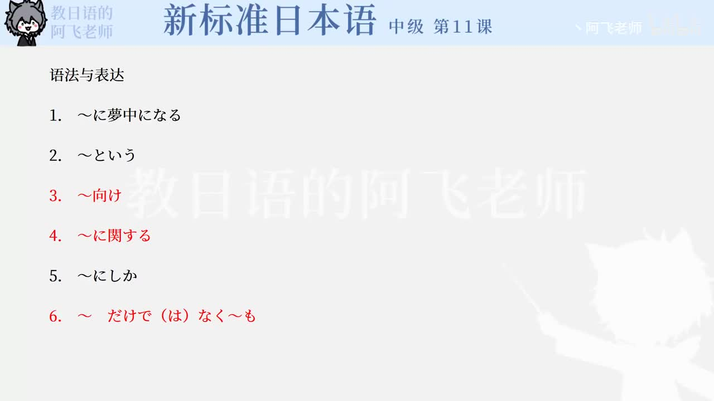

Bilibili P154 · Expressions
漫画とアニメ：语法与表达
围绕课文《漫画とアニメ》复盘判断与说明表达：入迷、转述、对象定位、话题范围、限定和范围扩展。
全篇听力精讲
按 6 个表达轮播。每项包含核心含义、接续、常见用法、易错提醒、课文例句和断句。
这一讲的表达地图
状态～に夢中になる
转述～という
对象～向け／～に関する
限定与扩展～にしか／～だけでなく～も
表达精讲
核心词汇与搭配
练习与复习
来源说明：视频标题、时长、CID 和首帧来自 Bilibili 公开视频接口；表达项目依据本地教材第11课语法与表达页整理。